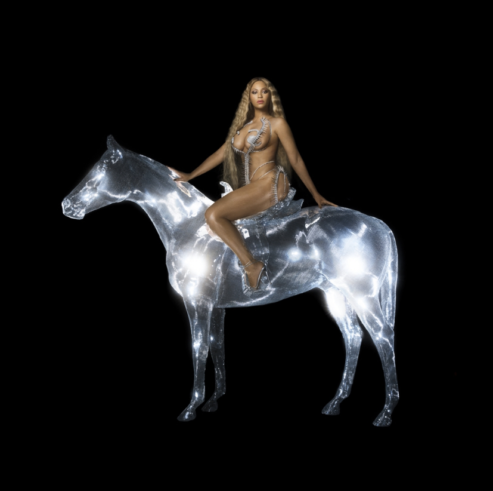
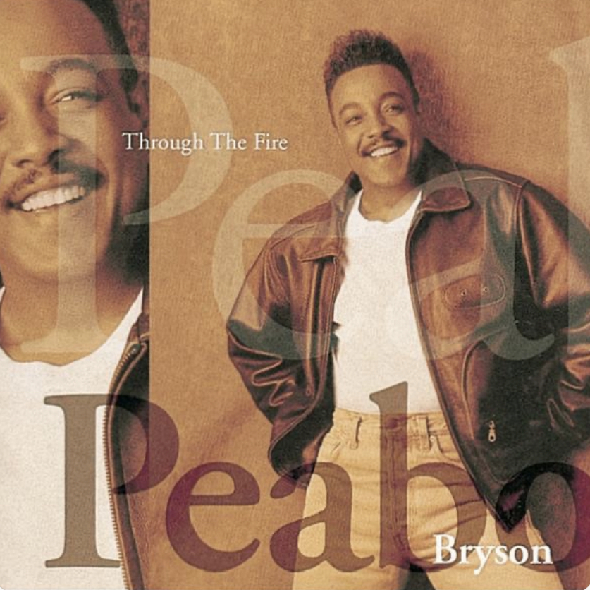
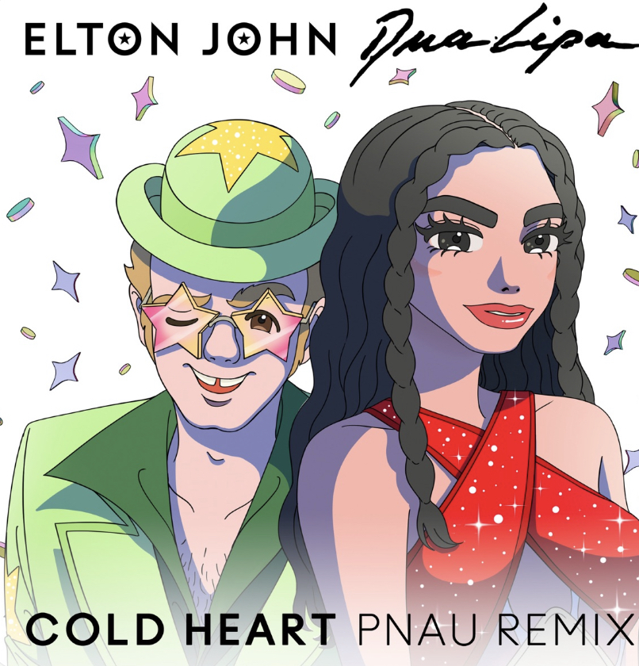
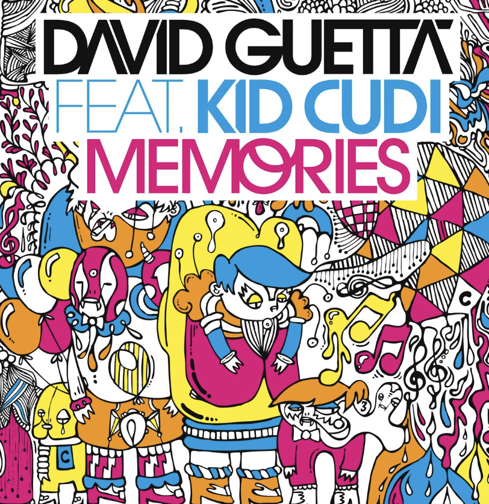
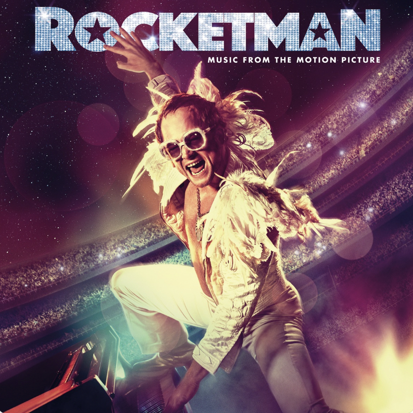
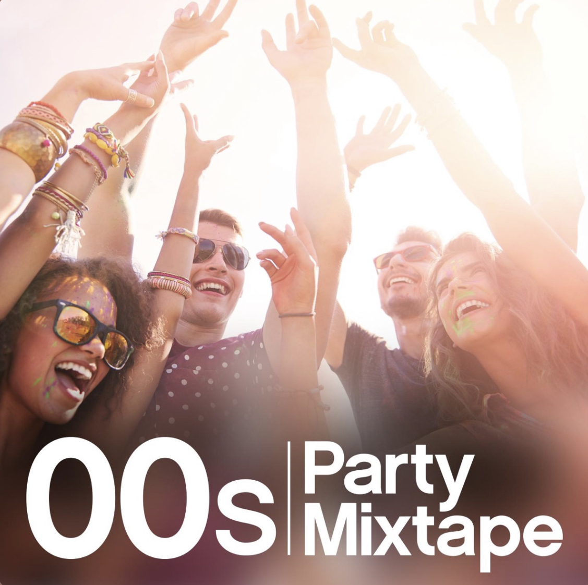

Mixtape
Easy On Me
Adele
Farbod's Mixtape
-

- Break My Soul
Beyonce - Beauty and the Beast
Peabo Bryson & Celine Dion - Cold Heart
Elton John & Dua Lipa - Memories
David Guetta FT. Kid CUdil - I'm Still Standing
Taron Egerton & Elton John - Freestyler (Radio Edit)
Bomfunk MC's





Song Title (1)
Break My Soul - Beyonce
I'm 'bout to explode, take off this load
Spin it, bust it open, won't ya make it go (come on)
Yaka, yaka, yaka, yaka
Yaka, yaka, yaka, yaka
Yaka, yaka, yaka, yaka
Yaka, yaka, yaka, yaka (release ya wiggle)
Yaka, yaka, yaka, yaka
Yaka, yaka, yaka, yaka
Yaka, yaka, yaka, yaka
Yaka, yaka, yaka, yaka (release ya wiggle)
Ahh (release ya anger)
La-la-la-la (release ya anger)
La-la-la-la (release ya mind)
La-la-la-la (release ya job)
La-la-la (release the time)
La-la-la-la (release ya trade)
La-la-la-la (release the stress)
La-la (release the love, forget the rest)
You won't break my soul
You won't break my soul
You won't break my soul
You won't break my soul
I'm tellin' everybody (ohh, let's go, let's go)
Everybody (ohh, let's go, let's go)
Everybody
Everybody
Now, I just fell in love
And I just quit my job
I'm gonna find new drive
Damn, they work me so damn hard
Work by nine, then off past five
And they work my nerves
That's why I cannot sleep at night
I'm lookin' for motivation
I'm lookin' for a new foundation, yeah
And I'm on that new vibration
I'm buildin' my own foundation, yeah
Hold up, oh, baby, baby
You won't break my soul (na, na)
You won't break my soul (no-no, na, na)
You won't break my soul (no-no, na, na)
You won't break my soul (na, na)
I'm tellin' everybody, na, na
Everybody
Everybody
Everybody
Release ya anger, release ya mind (ohh, let's go, let's go)
Release ya job, release the time (let's go, let's go, let's go)
Release ya trade, release the stress (ohh, let's go, let's go)
Release the love, forget the rest (ohh, let's go, let's go)
I'ma let down my hair 'cause I lost my mind
Bey is back and I'm sleepin' real good at night
The queens in the front and the Doms in the back (ohh, let's go, let's go)
Ain't takin' no flicks but the whole clique snapped (ohh, let's-)
There's a whole lot of people in the house
Tryna smoke with the yak in your mouth
(Good at night) and we back outside
You said you outside, but you ain't that outside
Worldwide hoodie with the mask outside
In case you forgot how we act outside
Got motivation (motivation)
I done found me a new foundation, yeah (new foundation)
I'm takin' my new salvation (oh, yeah, yeah, yeah, new salvation)
And I'ma build my own foundation, yeah (oh, yeah, yeah, yeah)
(Oh, yeah, yeah, yeah) oh, baby, baby
You won't break my soul (you won't)
You won't break my soul (break my soul)
You won't break my soul (you won't)
You won't break my soul (break my soul)
And I'm tellin' everybody (everybody)
Everybody (everybody)
Everybody (everybody)
Everybody, yeah
If you don't seek it, you won't see it
That we all know (can't break my soul)
If you don't think it, you won't be it
That love ain't yours (can't break my soul)
Tryna fake it never makes it
That we all know (can't break my soul)
You can have the stress and not take less
I'll justify love
We go 'round in circles, 'round in circles
Searchin' for love ('round in circles)
We go up and down, lost and found ('round in circles)
Searchin' for love (yeah, yeah)
Looking for something that lives inside me
Looking for something that lives inside me
You won't break my soul
You won't break my soul
You won't break my soul
You won't break my soul
I'm tellin' everybody (let's go, let's go, let's go)
Tellin' everybody
Everybody (ohh, let's go, let's go, let's go)
Everybody
You won't break my soul
You won't break my soul, no, no
You won't break my soul
You won't break my soul
And I'm tellin' everybody (motivation, oh, yeah, yeah)
Everybody (oh, yeah, yeah)
Everybody (I done found me a new foundation, yeah)
Everybody (oh yeah, yeah)
I'm takin' my new salvation (hey, yeah-yeah)
And I'ma build my own foundation, yeah (yeah-yeah, yeah-yeah-yeah, yeah)
Got motivation (motivation)
I done found me a new foundation, yeah (new foundation)
I'm takin' my new salvation (new salvation)
And I'ma build my own foundation, yeah (own foundation)
I'm 'bout to explode, take off this load
Spin it, bust it open, won't ya make it go (come on)
Yaka, yaka, yaka, yaka
Yaka, yaka, yaka, yaka
Yaka, yaka, yaka, yaka
Yaka, yaka, yaka, yaka (release ya wiggle)
Yaka, yaka, yaka, yaka
Yaka, yaka, yaka, yaka
Yaka, yaka, yaka, yaka
Yaka, yaka, yaka, yaka (release ya wiggle)
Release ya, release ya, release ya wiggle
Release ya anger, release ya mind (ohh, let's go)
Release ya job, release the time (let's go, let's go, let's go, let's go)
Release ya trade, release the stress (ohh, let's go, let's go)
Release the love, forget the rest (ohh, let's go, let's-)
Song Title (2)
Beauty and the Beast - Peabo Bryson & Celine Dion
Tale as old as time
True as it can be
Barely even friends
Then somebody bends
Unexpectedly
Just a little change
Small to say the least
Both a little scared
Neither one prepared
Beauty and the beast
Ever just the same
Ever a surprise
Ever as before and ever just as sure as the sun will rise
(Oh, oh, oh, oh)
Ever just the same
Ever a surprise
Ever as before
Ever just as sure
As the sun will rise
(Oh, oh, oh)
Tale as old as time (ooh, ooh, ooh)
Tune as old as song
Bittersweet and strange
Finding you can change
Learning you were wrong
Certain as the sun
Certain as the sun
Rising in the east
Tale as old as time
Song as old as rhyme
Beauty and the beast
Tale as old as time
Song as old as rhyme
Beauty and the beast
(Oh, oh, oh-oh)
(Ooh-ooh-ooh, ooh, ooh)
Beauty and the beast
Song Title (3)
Cold Heart - Elton John & Dua Lipa
It's a human sign
When things go wrong
When the scent of her lingers
And temptation's strong
Cold, cold heart
Hardened by you (oh)
Some things lookin' better, baby
Just passin' through (no, no, no, no, no)
And I think it's gonna be a long, long time
'Til touchdown brings me 'round again to find
I'm not the man they think I am at home
Oh no, no, no
And this is what I should have said
Well, I thought it, but I kept it hid
Cold, cold heart
Hardened by you (oh)
Some things lookin' better, baby
Just passin' through (no, no, no, no, no)
And I think it's gonna be a long, long time
'Til touchdown brings me 'round again to find
I'm not the man they think I am at home
Oh no, no, no (no, no, no, no, no)
And this is what I should have said
Well, I thought it, but I kept it hid
Cold, cold heart (oh)
Hardened by you
Some things lookin' better, baby (oh)
Just passin' through (no, no, no, no, no)
And I think it's gonna be a long, long time
'Til touchdown brings me 'round again to find
I'm not the man they think I am at home
Oh no, no, no (no, no, no, no, no)
And this is what I should have said (and I think it's gonna be a long, long time)
('Til touchdown brings me 'round again to find)
Well, I thought it, but I kept it hid (I'm not the man they think I am at home)
(Oh no, no, no) (no, no, no, no, no)
Shoorah (oh)
Shoorah
Shoorah (oh)
Shoorah
(No, no, no, no, no)
Song Title (4)
Memories - David Guetta FT. Kid CUdil
Yeah (yeah)
All the crazy shit I did tonight
Those will be the best memories
I just wanna let it go for the night
That would be the best therapy for me
All the crazy shit I did tonight
Those will be the best memories
I just wanna let it go for the night
That would be the best therapy for me
Hey, hey, yeah, yeah
Hey, hey, yeah, yeah
Hey, hey, yeah, yeah
Hey, hey, yeah, yeah, Yeah
All the crazy shit I did tonight
Those will be the best memories
I just wanna let it go for the night
That would be the best therapy for me
All the crazy shit I did tonight
Those will be the best memories
I just wanna let it go for the night
That would be the best therapy for me
Hey, hey, yeah, yeah
Hey, hey, yeah, yeah
Hey, hey, yeah, yeah
Hey, hey, yeah, yeah
It's gettin' late but I don't mind
It's gettin' late but I don't mind
It's gettin' late but I don't mind
It's gettin' late but I don't mind
It's gettin' late but I don't mind
It's gettin' late but I don't mind
It's gettin' late but I don't mind
It's gettin' late but I don't mind
Hey, hey, yeah, yeah
Hey, hey, yeah, yeah
Hey, hey, yeah, yeah
Hey, hey, yeah, yeah
Song Title (5)
I'm Still Standing - Taron Egerton & Elton John
You could never know what it's like
Your blood like winter freezes just like ice
And there's a cold lonely light that shines from you
You'll wind up like the wreck you hide behind that mask you use
And did you think this fool could never win?
Well look at me, I'm coming back again
I got a taste of love in a simple way
And if you need to know while I'm still standing you just fade away
And don't you know I'm still standing better than I ever did?
Looking like a true survivor, feeling like a little kid
And I'm still standing after all this time
Picking up the pieces of my life without you on my mind
I'm still standing, yeah, yeah, yeah
I'm still standing, yeah, yeah, yeah
Once I never could hope to win
You starting down the road leaving me again
The threats you made were meant to cut me down
And if our love was just a circus you'd be a clown by now
And don't you know I'm still standing better than I ever did?
Looking like a true survivor, feeling like a little kid
And I'm still standing after all this time
Picking up the pieces of my life without you on my mind
I'm still standing, yeah, yeah, yeah
I'm still standing, yeah, yeah, yeah
And don't you know I'm still standing better than I ever did?
Looking like a true survivor, feeling like a little kid
And I'm still standing after all this time
Picking up the pieces of my life without you on my mind
I'm still standing, yeah, yeah, yeah
I'm still standing, yeah, yeah, yeah
I'm still standing, yeah, yeah, yeah
I'm still standing, yeah, yeah, yeah
Song Title (6)
Freestyler (Radio Edit) - Bomfunk MC's
Freestyler
Rock the microphone
Carry on with the freestyler
I got to throw on and go on
You know I gots to flow on
Selectors on the radio play us
'Cause we're friendly for ozone
But that's not all so hold on tight
As I rock the mic right
Oh, excuse me, pardon
As I synchronise with the analysed
Upcomin' vibes, the session
Let there be a lesson, question
You carry protection
Or will your heart go on
Like Celine Dion
Karma Chameleon
Yeah, straight from the top of my dome
As I rock, rock, rock, rock, rock the microphone
Yeah, straight from the top of my dome
As I rock, rock, rock, rock, rock the microphone
Yeah, straight from the top of my dome
Styles, steelos
We bring many kilos
So you could pick yours from the various
Ambitious, nutritious, delicious, delirious or vicious
Just tell us, we deliver anything
From acappellas to propellers
Suckers get jealous but they're soft like marshmallows
You know they can't handle us like Debbie does Dallas
Yeah, we come scandalous so who the fuck is Alice
She from Buckingham Palace?
Yeah, straight from the top of my dome
As I rock, rock, rock, rock, rock the microphone
Yeah, straight from the top of my dome
As I rock, rock, rock, rock, rock the microphone
Yeah, straight from the top of my dome
As I rock, rock, rock, rock, rock the microphone
Yeah, straight from the top of my dome
As I rock, rock, rock, rock, rock the microphone
Freestyler
Rock the microphone
Carry on with the freestyler
Yeah, straight from the top of my dome
As I rock, rock, rock, rock, rock the microphone
Yeah, straight from the top of my dome
As I rock, rock, rock, rock, rock the microphone
Yeah, straight from the top of my dome
As I rock, rock, rock, rock, rock the microphone
Yeah, straight from the top of my dome
As I rock, rock, rock, rock, rock the microphone